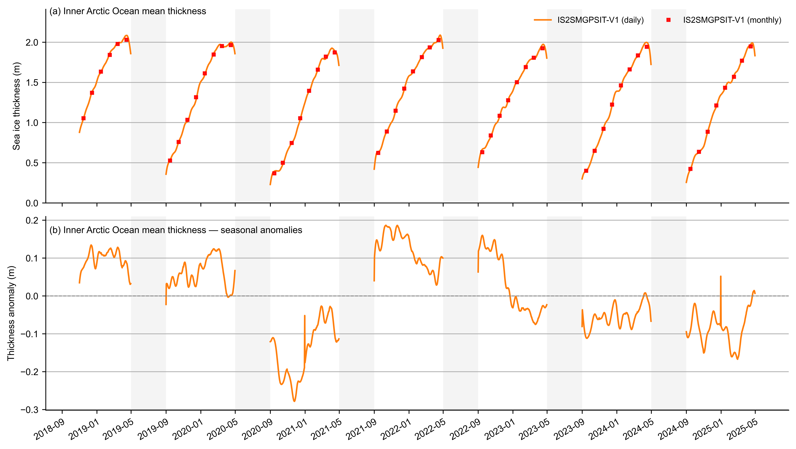

ICESat-2–SMOS–SMAP fusion: intro and V4 comparison#
Summary: Introduces the daily IS2SMGPSIT-V1 (ICESat-2–SMOS–SMAP fused) product and compares pan-Arctic thickness, freeboard, and snow depth with IS2SITMOGR4-V4 (monthly, ICESat-2 only).
Author: Alek Petty
Version history: Version 1 (08/2026)
import xarray as xr
import numpy as np
import pandas as pd
import matplotlib.pyplot as plt
import matplotlib.dates as mdates
import os
import warnings
warnings.filterwarnings('ignore')
import cartopy.crs as ccrs
import cartopy.feature as cfeature
from utils.read_data_utils import read_IS2SITMOGR4, read_is2smgpsitv1_zarr
import matplotlib as mpl
%config InlineBackend.figure_format = 'retina'
mpl.rcParams['figure.dpi'] = 300
mpl.rcParams.update({
'text.usetex': False,
'font.family': 'sans-serif',
'mathtext.fontset': 'stixsans',
'font.size': 8,
'axes.labelsize': 8,
'xtick.labelsize': 8,
'ytick.labelsize': 8,
'legend.fontsize': 8,
})
mpl.rcParams['font.sans-serif'] = ['Arial']
Load datasets#
Load IS2SITMOGR4-V4 (monthly) and IS2SMGPSIT-V1 (daily) from S3 Zarr.
# Monthly V4 product (ICESat-2 only)
IS2_v4 = read_IS2SITMOGR4(data_type='zarr-s3-v4', persist=False)
# Shift V4 monthly timestamps to the 15th of each month for consistency
_v4_time = pd.to_datetime(IS2_v4['time'].values)
_v4_start = _v4_time.to_period('M').to_timestamp(how='start')
_v4_mid = _v4_start + pd.Timedelta(days=14)
IS2_v4 = IS2_v4.assign_coords(time=_v4_mid.values)
print('IS2SITMOGR4-V4 (monthly, time shifted to 15th)')
print(IS2_v4)
load zarr from S3 bucket
zarr_path: s3://icesat-2-sea-ice-us-west-2/IS2SITMOGR4_V4/zarr/IS2SITMOGR4_V4_201811-202504.zarr
IS2SITMOGR4-V4 (monthly, time shifted to 15th)
<xarray.Dataset> Size: 1GB
Dimensions: (time: 54, y: 448, x: 304)
Coordinates:
latitude (y, x) float32 545kB 31.1 31.2 ... 34.47
longitude (y, x) float32 545kB 168.3 168.1 ... -9.999
* x (x) float32 1kB -3.838e+06 ... 3.738e+06
* y (y) float32 2kB 5.838e+06 ... -5.338e+06
* time (time) datetime64[ns] 432B 2018-11-15 ......
Data variables: (12/38)
crs (time) int32 216B dask.array<chunksize=(54,), meta=np.ndarray>
freeboard (time, y, x) float32 29MB dask.array<chunksize=(1, 448, 304), meta=np.ndarray>
freeboard_int (time, y, x) float32 29MB dask.array<chunksize=(1, 448, 304), meta=np.ndarray>
grid_cell_area (y, x) float32 545kB dask.array<chunksize=(448, 304), meta=np.ndarray>
ice_density (time, y, x) float32 29MB dask.array<chunksize=(1, 448, 304), meta=np.ndarray>
ice_density_j22 (time, y, x) float32 29MB dask.array<chunksize=(1, 448, 304), meta=np.ndarray>
... ...
snow_depth_mw99 (time, y, x) float32 29MB dask.array<chunksize=(1, 448, 304), meta=np.ndarray>
snow_depth_mw99_int (time, y, x) float32 29MB dask.array<chunksize=(1, 448, 304), meta=np.ndarray>
snow_depth_sm_e5 (time, y, x) float32 29MB dask.array<chunksize=(1, 448, 304), meta=np.ndarray>
snow_depth_sm_e5_int (time, y, x) float32 29MB dask.array<chunksize=(1, 448, 304), meta=np.ndarray>
snow_depth_sm_m2 (time, y, x) float32 29MB dask.array<chunksize=(1, 448, 304), meta=np.ndarray>
snow_depth_sm_m2_int (time, y, x) float32 29MB dask.array<chunksize=(1, 448, 304), meta=np.ndarray>
Attributes:
contact: Alek Petty (akpetty@umd.edu)
description: IS2SITMOGR4, version 004. Gridded Nov 2018 winter Arctic se...
history: Created 20/10/25
reference: Official NSIDC data doi: 10.5067/CV6JEXEE31HF. Derived data...
# Read IS2SMGPSIT-V1 from S3 and rebuild the local cache (producer notebook)
import time
t0 = time.perf_counter()
IS2_SMOS_SMAP = read_is2smgpsitv1_zarr(
persist=True,
cache=True,
cache_refresh=False,
)
IS2_SMOS_SMAP.info()
print(f"Elapsed: {time.perf_counter() - t0:.1f} s")
Loading IS2-SMOS-SMAP (is2smsitgp) Zarr from local cache
cache_path: ./data/cache/GPSat_multivar_20181101-20250430.zarr
xarray.Dataset {
dimensions:
time = 1635 ;
y = 448 ;
x = 304 ;
variables:
int32 crs(time) ;
crs:GeoTransform = -3850000.0 25000.0 0 5850000.0 0 -25000.0 ;
crs:false_easting = 0.0 ;
crs:false_northing = 0.0 ;
crs:grid_mapping_name = polar_stereographic ;
crs:latitude_of_projection_origin = 90.0 ;
crs:long_name = NSIDC Sea Ice Polar Stereographic North ;
crs:proj4text = +proj=stere +lat_0=90 +lat_ts=70 +lon_0=-45 +k=1 +x_0=0 +y_0=0 +a=6378273 +b=6356889.449 +units=m +no_defs ;
crs:srid = urn:ogc:def:crs:EPSG::3411 ;
crs:standard_parallel = 70.0 ;
crs:straight_vertical_longitude_from_pole = -45.0 ;
crs:units = meters ;
float32 freeboard(time, y, x) ;
freeboard:description = Mean freeboard across the grid cell (m). Uses ICESat-2 total freeboard and CDR sea ice concentration (open water) in the solution; gridded via GPSat interpolation. ;
freeboard:grid_mapping = crs ;
freeboard:long_name = sea ice freeboard (ICESat-2 total freeboard) ;
freeboard:units = meters ;
float32 grid_cell_area(y, x) ;
grid_cell_area:description = Grid cell area from NSIDC Polar Stereographic North (EPSG:3411). ;
grid_cell_area:grid_mapping = crs ;
grid_cell_area:long_name = grid cell area ;
grid_cell_area:source = https://doi.org/10.5067/N6INPBT8Y104 ;
grid_cell_area:units = m2 ;
float32 ice_thickness(time, y, x) ;
ice_thickness:description = Mean sea ice thickness across the grid cell (m). From fusion of ICESat-2 and SMAP (thin ice) via GP interpolation (petty). ;
ice_thickness:grid_mapping = crs ;
ice_thickness:long_name = sea ice thickness ;
ice_thickness:units = meters ;
float32 ice_thickness_unc(time, y, x) ;
ice_thickness_unc:description = Standard deviation of thickness (sqrt of predictive variance from GP). Thickness from ICESat-2/SMAP fusion. ;
ice_thickness_unc:grid_mapping = crs ;
ice_thickness_unc:long_name = sea ice thickness uncertainty (standard deviation) ;
ice_thickness_unc:units = meters ;
float32 latitude(y, x) ;
latitude:grid_mapping = crs ;
latitude:long_name = latitude ;
latitude:units = degrees_north ;
float32 longitude(y, x) ;
longitude:grid_mapping = crs ;
longitude:long_name = longitude ;
longitude:units = degrees_east ;
float32 mean_freeboard_regions_1_5(time) ;
mean_freeboard_regions_1_5:description = Area-weighted mean freeboard over grid cells in regions 1–5. Freeboard uses ICESat-2 and CDR SIC with GPSat interpolation. ;
mean_freeboard_regions_1_5:grid_mapping = crs ;
mean_freeboard_regions_1_5:long_name = mean total freeboard (area-weighted, NSIDC regions 1–5 only) ;
mean_freeboard_regions_1_5:units = m ;
float32 mean_sea_ice_conc_regions_1_5(time) ;
mean_sea_ice_conc_regions_1_5:description = Mean sea ice concentration over grid cells in regions 1–5. ;
mean_sea_ice_conc_regions_1_5:grid_mapping = crs ;
mean_sea_ice_conc_regions_1_5:long_name = mean sea ice concentration (NSIDC regions 1–5 only) ;
mean_sea_ice_conc_regions_1_5:units = 1 ;
float32 mean_sea_ice_thickness_regions_1_5(time) ;
mean_sea_ice_thickness_regions_1_5:description = Area-weighted mean ice thickness over grid cells in regions 1–5: sum(ice_thickness × grid_cell_area) / sum(grid_cell_area). Thickness from fusion of ICESat-2 and SMAP (thin ice). ;
mean_sea_ice_thickness_regions_1_5:grid_mapping = crs ;
mean_sea_ice_thickness_regions_1_5:long_name = mean sea ice thickness (area-weighted, NSIDC regions 1–5 only) ;
mean_sea_ice_thickness_regions_1_5:units = m ;
float32 mean_snow_depth_regions_1_5(time) ;
mean_snow_depth_regions_1_5:description = Area-weighted mean snow depth over grid cells in regions 1–5. Snow depth uses CDR SIC in the solution; from NESOSIM v1.1. ;
mean_snow_depth_regions_1_5:grid_mapping = crs ;
mean_snow_depth_regions_1_5:long_name = mean snow depth (area-weighted, NSIDC regions 1–5 only) ;
mean_snow_depth_regions_1_5:units = m ;
float32 region_mask(y, x) ;
region_mask:description = NSIDC-0780 sea ice region mask (sea_ice_region_surface_mask). CAA (Canadian Archipelago, value 12) is retained in gridded fields; see global attribute caa_uncertainty_caution. ;
region_mask:flag_values = 0, 1, 2, 3, 4, 5, 6, 7, 8, 9, 10, 11, 12, 13, 14, 15, 16, 17, 18, 30, 31, 32 ;
region_mask:grid_mapping = crs ;
region_mask:long_name = Northern Hemisphere region mask ;
region_mask:source = https://doi.org/10.5067/CYW3O8ZUNIWC ;
float32 snow_depth(time, y, x) ;
snow_depth:description = Mean snow depth across the grid cell (m). Uses CDR sea ice concentration in the solution; from NESOSIM v1.1 (IS-2 sub-sampled + GPSat interpolation). ;
snow_depth:grid_mapping = crs ;
snow_depth:long_name = snow depth on sea ice ;
snow_depth:units = meters ;
datetime64[ns] time(time) ;
time:long_name = time ;
time:standard_name = time ;
float32 total_sea_ice_volume(time) ;
total_sea_ice_volume:description = Sum of sea_ice_volume over all grid cells (km³). ;
total_sea_ice_volume:grid_mapping = crs ;
total_sea_ice_volume:long_name = total sea ice volume ;
total_sea_ice_volume:units = km3 ;
float32 total_sea_ice_volume_regions_1_5(time) ;
total_sea_ice_volume_regions_1_5:description = Sum of sea_ice_volume over grid cells in NSIDC-0780 regions 1–5 (Central Arctic through Laptev Sea), in km³. ;
total_sea_ice_volume_regions_1_5:grid_mapping = crs ;
total_sea_ice_volume_regions_1_5:long_name = total sea ice volume (NSIDC regions 1–5 only) ;
total_sea_ice_volume_regions_1_5:units = km3 ;
float32 x(x) ;
x:long_name = projection x coordinate ;
x:units = meters ;
float32 y(y) ;
y:long_name = projection y coordinate ;
y:units = meters ;
// global attributes:
:caa_uncertainty_caution = Canadian Arctic Archipelago (CAA; NSIDC-0780 sea_ice_region_surface_mask value 12) is included in gridded fields but has elevated uncertainty relative to the open Arctic Ocean: complex coastlines, land-fast ice, and limited altimetry/auxiliary coverage. Prefer open-ocean regions for quantitative applications, and treat CAA values with extra caution. ;
:contact = Alek Petty (akpetty@umd.edu) ;
:description = ICESat-2–SMOS–SMAP fused daily gridded product (GPSat multivar). ;
:history = Created 2026-07-29 ;
:inner_arctic_regions_note = Inner-Arctic scalars (mean_*_regions_1_5, total_sea_ice_volume_regions_1_5) use NSIDC-0780 regions 1–5 only (Central Arctic through Laptev Sea). Thickness/freeboard/snow means are area-weighted. total_sea_ice_volume is the pan-Arctic sum over all valid grid cells. ;
:n_timesteps = 1635 ;
:source = Combined from monthly IS2_interp_test_petty files (thickness/freeboard/snow_depth); grid area NSIDC0771; SIC CDR. ;
:time_coverage_end = 2025-04-30 ;
:time_coverage_start = 2018-11-01 ;
:training_season_caution = GP training is limited to a seasonal window (e.g. 1 Sep–30 Apr); there is no training data before 1 September or after 30 April in that setup. September and April sit at the edges of that window, so they have more limited in-window context than mid-season months—treat September and April fields with extra caution. ;
}Elapsed: 1.0 s
from utils.read_data_utils import is2smgpsit_domain_masks, area_weighted_spatial_mean, static_grid_cell_area, is2smgpsit_monthly_midmonth
# Pan-Arctic totals exclude CAA (region 12); IAO = NSIDC regions 1–5.
_masks_fused = is2smgpsit_domain_masks(IS2_SMOS_SMAP)
mask_pan_arctic_fused = _masks_fused['pan_arctic']
mask_iao_fused = _masks_fused['iao']
_masks_v4 = is2smgpsit_domain_masks(IS2_v4)
mask_pan_arctic_v4 = _masks_v4['pan_arctic']
mask_iao_v4 = _masks_v4['iao']
innerArctic = [1, 2, 3, 4, 5]
print('Pan-Arctic mask (excl. CAA) fused cells:', int(mask_pan_arctic_fused.sum().values))
print('IAO mask (regions 1–5) fused cells:', int(mask_iao_fused.sum().values))
_area_fused = static_grid_cell_area(IS2_SMOS_SMAP['grid_cell_area'])
_area_v4 = static_grid_cell_area(IS2_v4['grid_cell_area'])
Pan-Arctic mask (excl. CAA) fused cells: 134909
IAO mask (regions 1–5) fused cells: 11144
IS2_SMOS_SMAP.keys()
KeysView(<xarray.Dataset> Size: 4GB
Dimensions: (time: 1635, y: 448, x: 304)
Coordinates:
latitude (y, x) float32 545kB dask.array<chunksize=(448, 304), meta=np.ndarray>
longitude (y, x) float32 545kB dask.array<chunksize=(448, 304), meta=np.ndarray>
* time (time) datetime64[ns] 13kB 2018-11-01...
* x (x) float32 1kB -3.838e+06 ... 3.738e+06
* y (y) float32 2kB 5.838e+06 ... -5.338e+06
Data variables: (12/13)
crs (time) int32 7kB dask.array<chunksize=(100,), meta=np.ndarray>
freeboard (time, y, x) float32 891MB dask.array<chunksize=(100, 448, 304), meta=np.ndarray>
grid_cell_area (y, x) float32 545kB dask.array<chunksize=(448, 304), meta=np.ndarray>
ice_thickness (time, y, x) float32 891MB dask.array<chunksize=(100, 448, 304), meta=np.ndarray>
ice_thickness_unc (time, y, x) float32 891MB dask.array<chunksize=(100, 448, 304), meta=np.ndarray>
mean_freeboard_regions_1_5 (time) float32 7kB dask.array<chunksize=(100,), meta=np.ndarray>
... ...
mean_sea_ice_thickness_regions_1_5 (time) float32 7kB dask.array<chunksize=(100,), meta=np.ndarray>
mean_snow_depth_regions_1_5 (time) float32 7kB dask.array<chunksize=(100,), meta=np.ndarray>
region_mask (y, x) float32 545kB dask.array<chunksize=(448, 304), meta=np.ndarray>
snow_depth (time, y, x) float32 891MB dask.array<chunksize=(100, 448, 304), meta=np.ndarray>
total_sea_ice_volume (time) float32 7kB dask.array<chunksize=(100,), meta=np.ndarray>
total_sea_ice_volume_regions_1_5 (time) float32 7kB dask.array<chunksize=(100,), meta=np.ndarray>
Attributes:
caa_uncertainty_caution: Canadian Arctic Archipelago (CAA; NSIDC-0780 ...
contact: Alek Petty (akpetty@umd.edu)
description: ICESat-2–SMOS–SMAP fused daily gridded produc...
history: Created 2026-07-29
inner_arctic_regions_note: Inner-Arctic scalars (mean_*_regions_1_5, tot...
n_timesteps: 1635
source: Combined from monthly IS2_interp_test_petty f...
time_coverage_end: 2025-04-30
time_coverage_start: 2018-11-01
training_season_caution: GP training is limited to a seasonal window (...)
IS2_SMOS_SMAP.time
<xarray.DataArray 'time' (time: 1635)> Size: 13kB
array(['2018-11-01T00:00:00.000000000', '2018-11-02T00:00:00.000000000',
'2018-11-03T00:00:00.000000000', ..., '2025-04-28T00:00:00.000000000',
'2025-04-29T00:00:00.000000000', '2025-04-30T00:00:00.000000000'],
dtype='datetime64[ns]')
Coordinates:
* time (time) datetime64[ns] 13kB 2018-11-01 2018-11-02 ... 2025-04-30
Attributes:
long_name: time
standard_name: timeCompare structure and time coverage#
V4 is monthly; the fused product is daily. Both use a similar polar grid (y, x).
print('V4 time range:', IS2_v4.time.values.min(), 'to', IS2_v4.time.values.max())
print('V4 dimensions:', dict(IS2_v4.dims))
print('V4 data variables:', list(IS2_v4.data_vars))
print()
print('Fused product time range:', IS2_SMOS_SMAP.time.values.min(), 'to', IS2_SMOS_SMAP.time.values.max())
print('Fused dimensions:', dict(IS2_SMOS_SMAP.dims))
print('Fused data variables:', list(IS2_SMOS_SMAP.data_vars))
V4 time range: 2018-11-15T00:00:00.000000000 to 2025-04-15T00:00:00.000000000
V4 dimensions: {'time': 54, 'y': 448, 'x': 304}
V4 data variables: ['crs', 'freeboard', 'freeboard_int', 'grid_cell_area', 'ice_density', 'ice_density_j22', 'ice_thickness', 'ice_thickness_int', 'ice_thickness_j22', 'ice_thickness_j22_int', 'ice_thickness_mw99', 'ice_thickness_mw99_int', 'ice_thickness_sm_e5', 'ice_thickness_sm_e5_int', 'ice_thickness_sm_m2', 'ice_thickness_sm_m2_int', 'ice_thickness_unc', 'ice_thickness_unc_freeboard', 'ice_thickness_unc_ice_density', 'ice_thickness_unc_snow_density', 'ice_thickness_unc_snow_depth', 'ice_type', 'mean_day_of_month', 'num_segments', 'region_mask', 'sea_ice_conc', 'snow_density', 'snow_density_sm_e5', 'snow_density_sm_m2', 'snow_density_w99', 'snow_depth', 'snow_depth_int', 'snow_depth_mw99', 'snow_depth_mw99_int', 'snow_depth_sm_e5', 'snow_depth_sm_e5_int', 'snow_depth_sm_m2', 'snow_depth_sm_m2_int']
Fused product time range: 2018-11-01T00:00:00.000000000 to 2025-04-30T00:00:00.000000000
Fused dimensions: {'time': 1635, 'y': 448, 'x': 304}
Fused data variables: ['crs', 'freeboard', 'grid_cell_area', 'ice_thickness', 'ice_thickness_unc', 'mean_freeboard_regions_1_5', 'mean_sea_ice_conc_regions_1_5', 'mean_sea_ice_thickness_regions_1_5', 'mean_snow_depth_regions_1_5', 'region_mask', 'snow_depth', 'total_sea_ice_volume', 'total_sea_ice_volume_regions_1_5']
IS2_SMOS_SMAP
<xarray.Dataset> Size: 4GB
Dimensions: (time: 1635, y: 448, x: 304)
Coordinates:
latitude (y, x) float32 545kB dask.array<chunksize=(448, 304), meta=np.ndarray>
longitude (y, x) float32 545kB dask.array<chunksize=(448, 304), meta=np.ndarray>
* time (time) datetime64[ns] 13kB 2018-11-01...
* x (x) float32 1kB -3.838e+06 ... 3.738e+06
* y (y) float32 2kB 5.838e+06 ... -5.338e+06
Data variables: (12/13)
crs (time) int32 7kB dask.array<chunksize=(100,), meta=np.ndarray>
freeboard (time, y, x) float32 891MB dask.array<chunksize=(100, 448, 304), meta=np.ndarray>
grid_cell_area (y, x) float32 545kB dask.array<chunksize=(448, 304), meta=np.ndarray>
ice_thickness (time, y, x) float32 891MB dask.array<chunksize=(100, 448, 304), meta=np.ndarray>
ice_thickness_unc (time, y, x) float32 891MB dask.array<chunksize=(100, 448, 304), meta=np.ndarray>
mean_freeboard_regions_1_5 (time) float32 7kB dask.array<chunksize=(100,), meta=np.ndarray>
... ...
mean_sea_ice_thickness_regions_1_5 (time) float32 7kB dask.array<chunksize=(100,), meta=np.ndarray>
mean_snow_depth_regions_1_5 (time) float32 7kB dask.array<chunksize=(100,), meta=np.ndarray>
region_mask (y, x) float32 545kB dask.array<chunksize=(448, 304), meta=np.ndarray>
snow_depth (time, y, x) float32 891MB dask.array<chunksize=(100, 448, 304), meta=np.ndarray>
total_sea_ice_volume (time) float32 7kB dask.array<chunksize=(100,), meta=np.ndarray>
total_sea_ice_volume_regions_1_5 (time) float32 7kB dask.array<chunksize=(100,), meta=np.ndarray>
Attributes:
caa_uncertainty_caution: Canadian Arctic Archipelago (CAA; NSIDC-0780 ...
contact: Alek Petty (akpetty@umd.edu)
description: ICESat-2–SMOS–SMAP fused daily gridded produc...
history: Created 2026-07-29
inner_arctic_regions_note: Inner-Arctic scalars (mean_*_regions_1_5, tot...
n_timesteps: 1635
source: Combined from monthly IS2_interp_test_petty f...
time_coverage_end: 2025-04-30
time_coverage_start: 2018-11-01
training_season_caution: GP training is limited to a seasonal window (...Basic thickness comparison#
Inner-Arctic-Ocean (NSIDC regions 1–5) area-weighted mean ice_thickness_int (V4) vs the fused mean_sea_ice_thickness_regions_1_5 scalar, with May–August masked.
# Monthly-mean fused dataset (from daily Zarr)
# Resample to monthly, then shift timestamps to the 15th of each month
IS2_SMOS_SMAP_monthly = IS2_SMOS_SMAP.sortby('time').resample(time='1ME').mean()
_fused_time = pd.to_datetime(IS2_SMOS_SMAP_monthly['time'].values)
_fused_start = _fused_time.to_period('M').to_timestamp(how='start')
_fused_mid = _fused_start + pd.Timedelta(days=14)
IS2_SMOS_SMAP_monthly = IS2_SMOS_SMAP_monthly.assign_coords(time=_fused_mid.values)
# Carry static lat/lon grid into monthly product (no time dimension)
if 'latitude' in IS2_SMOS_SMAP.coords:
IS2_SMOS_SMAP_monthly = IS2_SMOS_SMAP_monthly.assign_coords(latitude=IS2_SMOS_SMAP['latitude'])
if 'longitude' in IS2_SMOS_SMAP.coords:
IS2_SMOS_SMAP_monthly = IS2_SMOS_SMAP_monthly.assign_coords(longitude=IS2_SMOS_SMAP['longitude'])
IS2_SMOS_SMAP_monthly
<xarray.Dataset> Size: 256MB
Dimensions: (x: 304, y: 448, time: 78)
Coordinates:
* x (x) float32 1kB -3.838e+06 ... 3.738e+06
* y (y) float32 2kB 5.838e+06 ... -5.338e+06
latitude (y, x) float32 545kB dask.array<chunksize=(448, 304), meta=np.ndarray>
longitude (y, x) float32 545kB dask.array<chunksize=(448, 304), meta=np.ndarray>
* time (time) datetime64[ns] 624B 2018-11-15...
Data variables: (12/13)
crs (time) float64 624B dask.array<chunksize=(1,), meta=np.ndarray>
freeboard (time, y, x) float32 42MB dask.array<chunksize=(1, 448, 304), meta=np.ndarray>
grid_cell_area (time, y, x) float32 42MB dask.array<chunksize=(1, 448, 304), meta=np.ndarray>
ice_thickness (time, y, x) float32 42MB dask.array<chunksize=(1, 448, 304), meta=np.ndarray>
ice_thickness_unc (time, y, x) float32 42MB dask.array<chunksize=(1, 448, 304), meta=np.ndarray>
mean_freeboard_regions_1_5 (time) float32 312B dask.array<chunksize=(1,), meta=np.ndarray>
... ...
mean_sea_ice_thickness_regions_1_5 (time) float32 312B dask.array<chunksize=(1,), meta=np.ndarray>
mean_snow_depth_regions_1_5 (time) float32 312B dask.array<chunksize=(1,), meta=np.ndarray>
region_mask (time, y, x) float32 42MB dask.array<chunksize=(1, 448, 304), meta=np.ndarray>
snow_depth (time, y, x) float32 42MB dask.array<chunksize=(1, 448, 304), meta=np.ndarray>
total_sea_ice_volume (time) float32 312B dask.array<chunksize=(1,), meta=np.ndarray>
total_sea_ice_volume_regions_1_5 (time) float32 312B dask.array<chunksize=(1,), meta=np.ndarray>
Attributes:
caa_uncertainty_caution: Canadian Arctic Archipelago (CAA; NSIDC-0780 ...
contact: Alek Petty (akpetty@umd.edu)
description: ICESat-2–SMOS–SMAP fused daily gridded produc...
history: Created 2026-07-29
inner_arctic_regions_note: Inner-Arctic scalars (mean_*_regions_1_5, tot...
n_timesteps: 1635
source: Combined from monthly IS2_interp_test_petty f...
time_coverage_end: 2025-04-30
time_coverage_start: 2018-11-01
training_season_caution: GP training is limited to a seasonal window (...# Inner Arctic Ocean area-weighted thickness means (NSIDC regions 1–5)
def _growth_season_only(da):
# Mask May–August while retaining gaps between growth seasons.
return da.where(~da.time.dt.month.isin([5, 6, 7, 8]))
v4_thick = IS2_v4['ice_thickness_int']
v4_valid = v4_thick.where(v4_thick > -1e10)
v4_mean = area_weighted_spatial_mean(v4_valid, mask_iao_v4, _area_v4)
# Fused IAO scalar is precomputed as an area-weighted mean over regions 1–5.
fused_thick = IS2_SMOS_SMAP_monthly['ice_thickness']
fused_valid = fused_thick.where(fused_thick > -1e10)
fused_mean_daily = IS2_SMOS_SMAP['mean_sea_ice_thickness_regions_1_5']
fused_mean_monthly = is2smgpsit_monthly_midmonth(fused_mean_daily)
print('V4 thickness variable:', v4_thick.name)
print('Fused IAO scalar used: mean_sea_ice_thickness_regions_1_5')
V4 thickness variable: ice_thickness_int
Fused IAO scalar used: mean_sea_ice_thickness_regions_1_5
#fused_mean_monthly.time
IS2_SMOS_SMAP_monthly
<xarray.Dataset> Size: 256MB
Dimensions: (x: 304, y: 448, time: 78)
Coordinates:
* x (x) float32 1kB -3.838e+06 ... 3.738e+06
* y (y) float32 2kB 5.838e+06 ... -5.338e+06
latitude (y, x) float32 545kB dask.array<chunksize=(448, 304), meta=np.ndarray>
longitude (y, x) float32 545kB dask.array<chunksize=(448, 304), meta=np.ndarray>
* time (time) datetime64[ns] 624B 2018-11-15...
Data variables: (12/13)
crs (time) float64 624B dask.array<chunksize=(1,), meta=np.ndarray>
freeboard (time, y, x) float32 42MB dask.array<chunksize=(1, 448, 304), meta=np.ndarray>
grid_cell_area (time, y, x) float32 42MB dask.array<chunksize=(1, 448, 304), meta=np.ndarray>
ice_thickness (time, y, x) float32 42MB dask.array<chunksize=(1, 448, 304), meta=np.ndarray>
ice_thickness_unc (time, y, x) float32 42MB dask.array<chunksize=(1, 448, 304), meta=np.ndarray>
mean_freeboard_regions_1_5 (time) float32 312B dask.array<chunksize=(1,), meta=np.ndarray>
... ...
mean_sea_ice_thickness_regions_1_5 (time) float32 312B dask.array<chunksize=(1,), meta=np.ndarray>
mean_snow_depth_regions_1_5 (time) float32 312B dask.array<chunksize=(1,), meta=np.ndarray>
region_mask (time, y, x) float32 42MB dask.array<chunksize=(1, 448, 304), meta=np.ndarray>
snow_depth (time, y, x) float32 42MB dask.array<chunksize=(1, 448, 304), meta=np.ndarray>
total_sea_ice_volume (time) float32 312B dask.array<chunksize=(1,), meta=np.ndarray>
total_sea_ice_volume_regions_1_5 (time) float32 312B dask.array<chunksize=(1,), meta=np.ndarray>
Attributes:
caa_uncertainty_caution: Canadian Arctic Archipelago (CAA; NSIDC-0780 ...
contact: Alek Petty (akpetty@umd.edu)
description: ICESat-2–SMOS–SMAP fused daily gridded produc...
history: Created 2026-07-29
inner_arctic_regions_note: Inner-Arctic scalars (mean_*_regions_1_5, tot...
n_timesteps: 1635
source: Combined from monthly IS2_interp_test_petty f...
time_coverage_end: 2025-04-30
time_coverage_start: 2018-11-01
training_season_caution: GP training is limited to a seasonal window (...# Three-panel comparison: V4, GP (IS2SMGPSIT), and difference (V4 - GP)
from utils.plotting_utils import plot_is2_v4_vs_fused_three_panel
# Choose a month (timestamps shifted to 15th of month)
compare_month = np.datetime64('2019-10-15') # adjust as desired
# Slice to single month and pass DataArrays (function expects dataarray1, dataarray2)
da_v4 = IS2_v4['ice_thickness_int'].sel(time=compare_month, method='nearest')
da_fused = IS2_SMOS_SMAP_monthly['ice_thickness'].sel(time=compare_month, method='nearest')
plot_is2_v4_vs_fused_three_panel(
dataarray1=da_v4,
dataarray2=da_fused,
panel_letters_start="a",
)
plt.savefig('../paper/figures/inner_arctic_seasonal_thickness_comparison_oct2019.png', dpi=300)
{kind=link}
# Three-panel comparison: V4, GP (IS2SMGPSIT), and difference (V4 - GP)
# Choose a month (timestamps shifted to 15th of month)
compare_month = np.datetime64('2020-03-15') # adjust as desired
da_v4 = IS2_v4['ice_thickness_int'].sel(time=compare_month, method='nearest')
da_fused = IS2_SMOS_SMAP_monthly['ice_thickness'].sel(time=compare_month, method='nearest')
plot_is2_v4_vs_fused_three_panel(
dataarray1=da_v4,
dataarray2=da_fused,
panel_letters_start="a",
)
plt.savefig('../paper/figures/inner_arctic_seasonal_thickness_comparison_march2020.png', dpi=300)
{kind=link}
Freeboard comparison#
Same three-panel map and inner-Arctic-Ocean (NSIDC regions 1–5) area-weighted mean time series for freeboard (V4: freeboard_int, fused: freeboard).
# Inner Arctic Ocean area-weighted mean freeboard (NSIDC regions 1–5)
v4_fb = IS2_v4['freeboard_int']
v4_fb_valid = v4_fb.where(v4_fb > -1e10)
v4_mean_fb = area_weighted_spatial_mean(v4_fb_valid, mask_iao_v4, _area_v4)
fused_fb = IS2_SMOS_SMAP_monthly['freeboard']
fused_fb_valid = fused_fb.where(fused_fb > -1e10)
fused_mean_fb_daily = IS2_SMOS_SMAP['mean_freeboard_regions_1_5']
fused_mean_fb_monthly = is2smgpsit_monthly_midmonth(fused_mean_fb_daily)
# Freeboard three-panel map (example month)
from utils.plotting_utils import plot_is2_v4_vs_fused_three_panel
compare_month = np.datetime64('2019-10-15')
da_v4 = IS2_v4['freeboard_int'].sel(time=compare_month, method='nearest')
da_fused = IS2_SMOS_SMAP_monthly['freeboard'].sel(time=compare_month, method='nearest')
plot_is2_v4_vs_fused_three_panel(
dataarray1=da_v4,
dataarray2=da_fused,
panel_letters_start="d",
vmin_thick=0.0,
vmax_thick=0.6,
diff_range=(-0.2, 0.2),
cbarlabels=['Total freeboard (m)', 'Total freeboard (m)', 'Freeboard difference (m)'],
cmaps=('YlOrRd', 'YlOrRd', 'RdBu'),
)
plt.savefig('../paper/figures/inner_arctic_seasonal_freeboard_comparison_oct2019.png', dpi=300)
plt.show()
{kind=link}
# Freeboard three-panel map (example month)
from utils.plotting_utils import plot_is2_v4_vs_fused_three_panel
compare_month = np.datetime64('2020-03-15')
da_v4 = IS2_v4['freeboard_int'].sel(time=compare_month, method='nearest')
da_fused = IS2_SMOS_SMAP_monthly['freeboard'].sel(time=compare_month, method='nearest')
plot_is2_v4_vs_fused_three_panel(
dataarray1=da_v4,
dataarray2=da_fused,
panel_letters_start="d",
vmin_thick=0.0,
vmax_thick=0.6,
diff_range=(-0.2, 0.2),
cbarlabels=['Total freeboard (m)', 'Total freeboard (m)', 'Freeboard difference (m)'],
cmaps=('YlOrRd', 'YlOrRd', 'RdBu'),
)
plt.savefig('../paper/figures/inner_arctic_seasonal_freeboard_comparison_march2020.png', dpi=300)
plt.show()
{kind=link}
Snow depth comparison#
Same three-panel map and inner-Arctic-Ocean (NSIDC regions 1–5) area-weighted mean time series for snow depth (V4: snow_depth_int, fused: snow_depth).
# Inner Arctic Ocean area-weighted mean snow depth (NSIDC regions 1–5)
v4_sd = IS2_v4['snow_depth_int']
v4_sd_valid = v4_sd.where(v4_sd > -1e10)
v4_mean_sd = area_weighted_spatial_mean(v4_sd_valid, mask_iao_v4, _area_v4)
fused_sd = IS2_SMOS_SMAP_monthly['snow_depth']
fused_sd_valid = fused_sd.where(fused_sd > -1e10)
fused_mean_sd_daily = IS2_SMOS_SMAP['mean_snow_depth_regions_1_5']
fused_mean_sd_monthly = is2smgpsit_monthly_midmonth(fused_mean_sd_daily)
# Snow depth three-panel map (example month)
compare_month = np.datetime64('2019-10-15')
da_v4 = IS2_v4['snow_depth_int'].sel(time=compare_month, method='nearest')
da_fused = IS2_SMOS_SMAP_monthly['snow_depth'].sel(time=compare_month, method='nearest')
plot_is2_v4_vs_fused_three_panel(
dataarray1=da_v4,
dataarray2=da_fused,
panel_letters_start="g",
vmin_thick=0.0,
vmax_thick=0.4,
diff_range=(-0.2, 0.2),
cbarlabels=['Snow depth (m)', 'Snow depth (m)', 'Snow depth difference (m)'],
cmaps=('inferno', 'inferno', 'RdBu'),
)
plt.savefig('../paper/figures/inner_arctic_seasonal_snow_depth_comparison_oct2019.png', dpi=300)
plt.show()
{kind=link}
# Snow depth three-panel map (example month)
compare_month = np.datetime64('2020-03-15')
da_v4 = IS2_v4['snow_depth_int'].sel(time=compare_month, method='nearest')
da_fused = IS2_SMOS_SMAP_monthly['snow_depth'].sel(time=compare_month, method='nearest')
plot_is2_v4_vs_fused_three_panel(
dataarray1=da_v4,
dataarray2=da_fused,
panel_letters_start="g",
vmin_thick=0.0,
vmax_thick=0.4,
diff_range=(-0.2, 0.2),
cbarlabels=['Snow depth (m)', 'Snow depth (m)', 'Snow depth difference (m)'],
cmaps=('inferno', 'inferno', 'RdBu'),
)
plt.savefig('../paper/figures/inner_arctic_seasonal_snow_depth_comparison_march2020.png', dpi=300)
plt.show()
{kind=link}
IS2SMGPSIT-V1 GP uncertainty (example months)#
Three-panel Arctic maps of the GP predictive standard deviation (monthly mean of daily freeboard_unc, snow_depth_unc, and ice_thickness_unc) for the same example dates as above: October~2019 and March~2020.
from utils.plotting_utils import plot_is2smgpsit_thickness_unc_three_months
_da_unc_oct = IS2_SMOS_SMAP_monthly['ice_thickness_unc'].sel(time=np.datetime64('2022-09-15'), method='nearest')
_da_unc_mar_1 = IS2_SMOS_SMAP_monthly['ice_thickness_unc'].sel(time=np.datetime64('2024-12-15'), method='nearest')
_da_unc_mar_2 = IS2_SMOS_SMAP_monthly['ice_thickness_unc'].sel(time=np.datetime64('2025-02-15'), method='nearest')
_unc_fpath = '../paper/figures/is2smgpsit_v1_monthly_uncertainty_thickness_oct_mar.png'
plot_is2smgpsit_thickness_unc_three_months(
_da_unc_oct,
_da_unc_mar_1,
_da_unc_mar_2,
vmax=0.3,
)
plt.savefig(_unc_fpath, dpi=300, bbox_inches='tight')
plt.show()
{kind=link}
Inner Arctic Ocean (inner AO) thickness comparison#
Here we follow the PIOMAS/CryoSat-2 comparison approach from the IS2/CS2/PIOMAS notebook: we restrict both products to the inner Arctic Ocean region and compare (1) full inner-AO means and (2) means computed on a common spatial mask where both products have valid data.
# Inner Arctic Ocean (NSIDC regions 1–5)
# Fused: precomputed area-weighted scalars (mean_*_regions_1_5) from the Zarr.
# V4: grid-based area-weighted means (no equivalent scalar in IS2SITMOGR4).
from utils.read_data_utils import is2smgpsit_monthly_midmonth
v4_thick_iao = IS2_v4['ice_thickness_int'].where(mask_iao_v4)
fused_thick_iao = IS2_SMOS_SMAP_monthly['ice_thickness'].where(mask_iao_fused)
v4_mean_iao_full = area_weighted_spatial_mean(
v4_thick_iao.where(v4_thick_iao > -1e10), mask_iao_v4, _area_v4
)
fused_mean_daily_iao = IS2_SMOS_SMAP['mean_sea_ice_thickness_regions_1_5']
fused_mean_iao_full = is2smgpsit_monthly_midmonth(fused_mean_daily_iao)
v4_fb_iao = IS2_v4['freeboard_int'].where(mask_iao_v4)
fused_fb_iao = IS2_SMOS_SMAP_monthly['freeboard'].where(mask_iao_fused)
fused_mean_fb_iao_full = is2smgpsit_monthly_midmonth(
IS2_SMOS_SMAP['mean_freeboard_regions_1_5']
)
v4_mean_fb_iao_full = area_weighted_spatial_mean(
v4_fb_iao.where(v4_fb_iao > -1e10), mask_iao_v4, _area_v4
)
v4_sd_iao = IS2_v4['snow_depth_int'].where(mask_iao_v4)
fused_sd_iao = IS2_SMOS_SMAP_monthly['snow_depth'].where(mask_iao_fused)
fused_mean_sd_iao_full = is2smgpsit_monthly_midmonth(
IS2_SMOS_SMAP['mean_snow_depth_regions_1_5']
)
v4_mean_sd_iao_full = area_weighted_spatial_mean(
v4_sd_iao.where(v4_sd_iao > -1e10), mask_iao_v4, _area_v4
)
# Build common-mask inner-AO monthly means (area-weighted; same mask for all three fields)
# Both products are already monthly with 15th-of-month timestamps
common_time = np.intersect1d(v4_mean_iao_full['time'].values, fused_mean_iao_full['time'].values)
v4_iao_common_vals = []
fused_iao_common_vals = []
v4_fb_iao_common_vals = []
fused_fb_iao_common_vals = []
v4_sd_iao_common_vals = []
fused_sd_iao_common_vals = []
common_times = []
for t in common_time:
v4_field = v4_thick_iao.sel(time=t)
fused_field = fused_thick_iao.sel(time=t)
v4_fb_field = v4_fb_iao.sel(time=t)
fused_fb_field = fused_fb_iao.sel(time=t)
v4_sd_field = v4_sd_iao.sel(time=t)
fused_sd_field = fused_sd_iao.sel(time=t)
# Common spatial mask: valid in both products (use thickness to define mask for all three)
mask = (
(v4_field > -1e-10) & np.isfinite(v4_field) &
(fused_field > -1e-10) & np.isfinite(fused_field)
)
if not mask.any().compute():
continue
def _aw_scalar(field, m, area):
f = field.where(m)
a = area.where(m)
return float((f * a).sum() / a.sum())
v4_iao_common_vals.append(_aw_scalar(v4_field, mask, _area_v4))
fused_iao_common_vals.append(_aw_scalar(fused_field, mask, _area_fused))
v4_fb_iao_common_vals.append(_aw_scalar(v4_fb_field, mask, _area_v4))
fused_fb_iao_common_vals.append(_aw_scalar(fused_fb_field, mask, _area_fused))
v4_sd_iao_common_vals.append(_aw_scalar(v4_sd_field, mask, _area_v4))
fused_sd_iao_common_vals.append(_aw_scalar(fused_sd_field, mask, _area_fused))
common_times.append(pd.to_datetime(t))
v4_mean_iao_common = xr.DataArray(
v4_iao_common_vals, coords={'time': common_times}, dims='time', name='v4_mean_iao_common'
)
fused_mean_iao_common = xr.DataArray(
fused_iao_common_vals, coords={'time': common_times}, dims='time', name='fused_mean_iao_common'
)
v4_mean_fb_iao_common = xr.DataArray(
v4_fb_iao_common_vals, coords={'time': common_times}, dims='time', name='v4_mean_fb_iao_common'
)
fused_mean_fb_iao_common = xr.DataArray(
fused_fb_iao_common_vals, coords={'time': common_times}, dims='time', name='fused_mean_fb_iao_common'
)
v4_mean_sd_iao_common = xr.DataArray(
v4_sd_iao_common_vals, coords={'time': common_times}, dims='time', name='v4_mean_sd_iao_common'
)
fused_mean_sd_iao_common = xr.DataArray(
fused_sd_iao_common_vals, coords={'time': common_times}, dims='time', name='fused_mean_sd_iao_common'
)
# Reindex to continuous monthly grid so summer gaps appear as line breaks
_t0_iao = min(
v4_mean_iao_full.time.values.min(),
fused_mean_iao_full.time.values.min(),
)
_t1_iao = max(
v4_mean_iao_full.time.values.max(),
fused_mean_iao_full.time.values.max(),
)
_t0_iao, _t1_iao = pd.Timestamp(_t0_iao), pd.Timestamp(_t1_iao)
_grid_start_iao = (
pd.Timestamp(year=_t0_iao.year, month=9, day=1)
if _t0_iao.month >= 9
else pd.Timestamp(year=_t0_iao.year - 1, month=9, day=1)
)
all_months_iao = pd.date_range(_grid_start_iao, _t1_iao, freq='MS') + pd.Timedelta(days=14)
# Freeboard
v4_fb_iao_plot = _growth_season_only(v4_mean_fb_iao_full.reindex(time=all_months_iao))
fused_fb_iao_plot = _growth_season_only(fused_mean_fb_iao_full.reindex(time=all_months_iao))
v4_fb_iao_common_plot = _growth_season_only(v4_mean_fb_iao_common.reindex(time=all_months_iao))
fused_fb_iao_common_plot = _growth_season_only(fused_mean_fb_iao_common.reindex(time=all_months_iao))
# Snow depth
v4_sd_iao_plot = _growth_season_only(v4_mean_sd_iao_full.reindex(time=all_months_iao))
fused_sd_iao_plot = _growth_season_only(fused_mean_sd_iao_full.reindex(time=all_months_iao))
v4_sd_iao_common_plot = _growth_season_only(v4_mean_sd_iao_common.reindex(time=all_months_iao))
fused_sd_iao_common_plot = _growth_season_only(fused_mean_sd_iao_common.reindex(time=all_months_iao))
# Thickness
v4_iao_plot = _growth_season_only(v4_mean_iao_full.reindex(time=all_months_iao))
fused_iao_plot = _growth_season_only(fused_mean_iao_full.reindex(time=all_months_iao))
v4_iao_common_plot = _growth_season_only(v4_mean_iao_common.reindex(time=all_months_iao))
fused_iao_common_plot = _growth_season_only(fused_mean_iao_common.reindex(time=all_months_iao))
fig, axes = plt.subplots(3, 1, figsize=(10.5, 6.8), sharex=True)
# Row 0: freeboard
ax = axes[0]
v4_fb_iao_plot.plot(ax=ax, label='IS2SITMOGR4-V4', color='k', marker='o', markersize=3, lw=1.5, ls='--')
fused_fb_iao_plot.plot(ax=ax, label='IS2SMGPSIT-V1 (all data)', color='b', marker='x', markersize=3, lw=1)
fused_fb_iao_common_plot.plot(ax=ax, label='IS2SMGPSIT-V1 (common-mask)', color='b', marker='o', markersize=3, ls='--')
ax.set_ylabel('Total freeboard (m)')
ax.set_xlabel('')
ax.tick_params(axis='x', labelbottom=False)
ax.grid(axis='y')
ax.set_ylim(0, 0.45)
ax.spines['top'].set_visible(False)
ax.spines['right'].set_visible(False)
ax.legend(loc='upper right', ncol=3, frameon=False)
# Row 1: snow depth
ax = axes[1]
v4_sd_iao_plot.plot(ax=ax, label='IS2SITMOGR4-V4', color='k', marker='o', markersize=3, lw=1.5, ls='--')
fused_sd_iao_plot.plot(ax=ax, label='IS2SMGPSIT-V1 (all data)', color='b', marker='x', markersize=3, lw=1)
fused_sd_iao_common_plot.plot(ax=ax, label='IS2SMGPSIT-V1 (common-mask)', color='b', marker='o', markersize=3, ls='--')
ax.set_ylabel('Snow depth (m)')
ax.tick_params(axis='x', labelbottom=False)
ax.grid(axis='y')
ax.set_xlabel('')
ax.spines['top'].set_visible(False)
ax.spines['right'].set_visible(False)
# Row 2: thickness
ax = axes[2]
v4_iao_plot.plot(ax=ax, label='IS2SITMOGR4-V4', color='k', marker='o', markersize=3, lw=1.5, ls='--')
fused_iao_plot.plot(ax=ax, label='IS2SMGPSIT-V1 (all data)', color='b', marker='x', markersize=3, lw=1)
fused_iao_common_plot.plot(ax=ax, label='IS2SMGPSIT-V1 (common-mask)', color='b', marker='o', markersize=3, ls='--')
ax.set_ylabel('Sea ice thickness (m)')
ax.set_xlabel('Date')
ax.grid(axis='y')
ax.spines['top'].set_visible(False)
ax.spines['right'].set_visible(False)
# Shade summer months (May–Aug) on all rows
times_iao = pd.to_datetime(all_months_iao)
for ax in axes:
for year in np.unique(times_iao.year):
for month in [5, 6, 7, 8]:
start = pd.Timestamp(year=year, month=month, day=1)
end = pd.Timestamp(year=year, month=month + 1, day=1) if month < 12 else pd.Timestamp(year=year + 1, month=1, day=1)
if start >= times_iao.min() and start <= times_iao.max():
ax.axvspan(start, end, color='0.8', alpha=0.2, linewidth=0)
axes[2].xaxis.set_major_locator(mdates.MonthLocator(bymonth=[9, 1, 5], bymonthday=1))
axes[2].xaxis.set_major_formatter(mdates.DateFormatter('%Y-%m'))
for ax in axes:
ax.tick_params(axis='y', labelsize=9)
ax.yaxis.label.set_size(9)
axes[2].tick_params(axis='x', labelsize=9)
axes[2].xaxis.label.set_size(9)
for label in axes[2].get_xticklabels():
label.set_rotation(30)
label.set_ha('right')
label.set_rotation_mode('anchor')
plt.tight_layout()
plt.savefig('../paper/figures/inner_arctic_seasonal_thickness_freeboard_snowdepth_comparison.png', dpi=300)
plt.show()
{kind=link}
Seasonal thickness cycle and anomalies#
Two panels: inner-Arctic-Ocean (regions 1–5) mean thickness (top: daily line + monthly markers) and daily seasonal anomalies (bottom). Summers (May–August) are shaded; daily values are masked in summer where coverage is absent. Set SHOW_CS2SMOS = True in the next cell to optionally overlay CS-2/SMOS v206 monthly thickness.
# Inner Arctic mean thickness: two panels (raw + seasonal anomalies)
# Pan-Arctic mean thickness mixes ice and open water so we keep this figure inner-Arctic only.
# Optional CS-2/SMOS v206 overlay (markers only; melt months masked).
SHOW_CS2SMOS = False
# CS-2/SMOS v206 IAO thickness (monthly CSV)
_cs2_df = pd.read_csv(
'./data/cs2smos-timeseries-v206-monthly-is2domain.csv',
parse_dates=['time'],
).sort_values('time').reset_index(drop=True)
_cs2_df = _cs2_df[_cs2_df['time'] >= pd.Timestamp('2018-09-01')].reset_index(drop=True)
_cs2_m = _cs2_df['time'].dt.month
_cs2_thickness = _cs2_df['mean_sea_ice_thickness'].where(~_cs2_m.isin([5, 6, 7, 8]))
# Continuous timeline for seasonal gaps; previously defined by a removed diagnostic cell.
_t0_seasonal = pd.Timestamp(fused_mean_daily_iao.time.values.min())
_t1_seasonal = pd.Timestamp(fused_mean_daily_iao.time.values.max())
_grid_start_seasonal = (
pd.Timestamp(year=_t0_seasonal.year, month=9, day=1)
if _t0_seasonal.month >= 9
else pd.Timestamp(year=_t0_seasonal.year - 1, month=9, day=1)
)
all_days = pd.date_range(_grid_start_seasonal, _t1_seasonal, freq='D')
all_months = pd.date_range(_grid_start_seasonal, _t1_seasonal, freq='MS') + pd.Timedelta(days=14)
times_d = pd.to_datetime(all_days)
def _style_ts_axes(ax):
ax.grid(axis='y')
ax.spines['top'].set_visible(False)
ax.spines['right'].set_visible(False)
ax.xaxis.set_major_locator(mdates.MonthLocator(bymonth=[9, 1, 5], bymonthday=1))
ax.xaxis.set_major_formatter(mdates.DateFormatter('%Y-%m'))
ax.tick_params(axis='both', labelsize=9)
ax.yaxis.label.set_size(9)
ax.xaxis.label.set_size(9)
for label in ax.get_xticklabels():
label.set_rotation(30)
label.set_ha('right')
label.set_rotation_mode('anchor')
def _shade_summer(ax):
for year in np.unique(times_d.year):
for month in [5, 6, 7, 8]:
start = pd.Timestamp(year=year, month=month, day=1)
end = (
pd.Timestamp(year=year, month=month + 1, day=1)
if month < 12
else pd.Timestamp(year=year + 1, month=1, day=1)
)
if start >= times_d.min() and start <= times_d.max():
ax.axvspan(start, end, color='0.8', alpha=0.2, linewidth=0)
# --- Climatologies & anomalies: inner Arctic ---
clim_fused_iao_m = fused_mean_iao_full.groupby(fused_mean_iao_full.time.dt.month).mean('time')
fused_anom_iao_m = fused_mean_iao_full - clim_fused_iao_m.sel(
month=fused_mean_iao_full.time.dt.month
)
fused_anom_monthly_iao = fused_anom_iao_m.reindex(time=all_months)
clim_fused_iao_d = fused_mean_daily_iao.groupby(fused_mean_daily_iao.time.dt.dayofyear).mean('time')
fused_anom_iao_d = fused_mean_daily_iao - clim_fused_iao_d.sel(
dayofyear=fused_mean_daily_iao.time.dt.dayofyear
)
fused_anom_daily_iao = fused_anom_iao_d.reindex(time=all_days).where(
~np.isin(times_d.month, [5, 6, 7, 8])
)
fused_daily_iao = fused_mean_daily_iao.reindex(time=all_days).where(
~np.isin(times_d.month, [5, 6, 7, 8])
)
fused_monthly_iao = fused_mean_iao_full.reindex(time=all_months)
print('\n' + '=' * 70)
print('Inner Arctic Ocean thickness — IS2SMGPSIT-V1 (write-up)')
print('=' * 70)
_m = fused_monthly_iao.load()
for t, v in zip(pd.to_datetime(_m.time.values), np.asarray(_m.values).ravel()):
if np.isfinite(v):
print(f' monthly mean thickness {t:%Y-%m-%d} {v:.4f} m')
if SHOW_CS2SMOS:
print('--- CS-2/SMOS v206 IAO monthly mean thickness ---')
for ts, v in zip(_cs2_df['time'], _cs2_thickness.values):
if np.isfinite(v):
print(f' monthly (CS-2/SMOS) {pd.Timestamp(ts):%Y-%m-%d} {v:.4f} m')
fig, (ax0, ax1) = plt.subplots(2, 1, figsize=(10.8, 6.12), sharex=True)
fused_daily_iao.plot(
ax=ax0, color='C1', linewidth=1.5, label='IS2SMGPSIT-V1 (daily)', zorder=2
)
fused_monthly_iao.plot(
ax=ax0,
color='r',
marker='s',
markersize=3,
linestyle='None',
linewidth=0,
label='IS2SMGPSIT-V1 (monthly)',
alpha=0.9,
zorder=3,
)
if SHOW_CS2SMOS:
ax0.plot(
_cs2_df['time'], _cs2_thickness.values,
color='c', linestyle='', linewidth=0, marker='^', markersize=3, alpha=0.9,
label='CS-2/SMOS v206 (monthly)', zorder=3,
)
ax0.set_xlabel('')
ax0.set_ylabel('Sea ice thickness (m)')
ax0.set_ylim(0, 2.41)
ax0.text(0.005, 1.01, '(a) Inner Arctic Ocean mean thickness',
transform=ax0.transAxes, ha='left', va='top', fontsize=9)
ax0.legend(loc='upper right', frameon=False, ncol=3 if SHOW_CS2SMOS else 2, fontsize=8)
ax0.tick_params(axis='x', labelbottom=False)
_style_ts_axes(ax0)
_shade_summer(ax0)
fused_anom_daily_iao.plot(
ax=ax1, color='C1', linewidth=1.5, label='IS2SMGPSIT-V1 (daily)', zorder=2
)
ax1.axhline(0, color='gray', linewidth=0.8, linestyle='--')
ax1.set_ylabel('Thickness anomaly (m)')
ax1.set_xlabel('')
ax1.text(0.005, 0.95, '(b) Inner Arctic Ocean mean thickness — seasonal anomalies',
transform=ax1.transAxes, ha='left', va='top', fontsize=9)
_style_ts_axes(ax1)
_shade_summer(ax1)
plt.tight_layout()
plt.subplots_adjust(hspace=0.07)
_suffix = '_cs2' if SHOW_CS2SMOS else ''
plt.savefig(f'../paper/figures/inner_arctic_seasonal_thickness_anomalies{_suffix}.png', dpi=300)
plt.show()
======================================================================
Inner Arctic Ocean thickness — IS2SMGPSIT-V1 (write-up)
======================================================================
monthly mean thickness 2018-11-15 1.0543 m
monthly mean thickness 2018-12-15 1.3710 m
monthly mean thickness 2019-01-15 1.6339 m
monthly mean thickness 2019-02-15 1.8424 m
monthly mean thickness 2019-03-15 1.9781 m
monthly mean thickness 2019-04-15 2.0301 m
monthly mean thickness 2019-09-15 0.5274 m
monthly mean thickness 2019-10-15 0.7595 m
monthly mean thickness 2019-11-15 1.0336 m
monthly mean thickness 2019-12-15 1.3156 m
monthly mean thickness 2020-01-15 1.6131 m
monthly mean thickness 2020-02-15 1.8470 m
monthly mean thickness 2020-03-15 1.9530 m
monthly mean thickness 2020-04-15 1.9652 m
monthly mean thickness 2020-09-15 0.3679 m
monthly mean thickness 2020-10-15 0.4997 m
monthly mean thickness 2020-11-15 0.7462 m
monthly mean thickness 2020-12-15 1.0546 m
monthly mean thickness 2021-01-15 1.3951 m
monthly mean thickness 2021-02-15 1.6579 m
monthly mean thickness 2021-03-15 1.8208 m
monthly mean thickness 2021-04-15 1.8732 m
monthly mean thickness 2021-09-15 0.6225 m
monthly mean thickness 2021-10-15 0.8881 m
monthly mean thickness 2021-11-15 1.1468 m
monthly mean thickness 2021-12-15 1.4233 m
monthly mean thickness 2022-01-15 1.6371 m
monthly mean thickness 2022-02-15 1.8141 m
monthly mean thickness 2022-03-15 1.9354 m
monthly mean thickness 2022-04-15 2.0267 m
monthly mean thickness 2022-09-15 0.6312 m
monthly mean thickness 2022-10-15 0.8399 m
monthly mean thickness 2022-11-15 1.0844 m
monthly mean thickness 2022-12-15 1.2781 m
monthly mean thickness 2023-01-15 1.5028 m
monthly mean thickness 2023-02-15 1.6908 m
monthly mean thickness 2023-03-15 1.8069 m
monthly mean thickness 2023-04-15 1.9251 m
monthly mean thickness 2023-09-15 0.4011 m
monthly mean thickness 2023-10-15 0.6482 m
monthly mean thickness 2023-11-15 0.9223 m
monthly mean thickness 2023-12-15 1.2241 m
monthly mean thickness 2024-01-15 1.4630 m
monthly mean thickness 2024-02-15 1.6622 m
monthly mean thickness 2024-03-15 1.8354 m
monthly mean thickness 2024-04-15 1.9432 m
monthly mean thickness 2024-09-15 0.4241 m
monthly mean thickness 2024-10-15 0.6356 m
monthly mean thickness 2024-11-15 0.8855 m
monthly mean thickness 2024-12-15 1.2129 m
monthly mean thickness 2025-01-15 1.4335 m
monthly mean thickness 2025-02-15 1.5701 m
monthly mean thickness 2025-03-15 1.7696 m
monthly mean thickness 2025-04-15 1.9470 m
{kind=link}

Inner Arctic growth-season thickness: winters overlaid#
Same inner-Arctic-Ocean spatial mean as above, but each growth season (Sep–Apr; ICESat-2 record starts Nov 2018 so the first winter has no September or October monthly means) is drawn on a common month axis so years can be compared—similar to the overlapping seasonal layouts in plot_seasonal_growth_is2cs2_2024.py. IS2SMGPSIT-V1 only (monthly means).
# Overlapping winters on a common Sep–Apr axis (cf. arctic_report_card/plot_seasonal_growth_is2cs2_2024.py)
_WINTER_MONTHS = [9, 10, 11, 12, 1, 2, 3, 4]
_WINTER_X = np.arange(len(_WINTER_MONTHS))
_WINTER_LABELS = ['Sep', 'Oct', 'Nov', 'Dec', 'Jan', 'Feb', 'Mar', 'Apr']
def _monthly_series(da_monthly):
return pd.Series(
np.asarray(da_monthly.values).ravel(),
index=pd.to_datetime(da_monthly.time.values),
).sort_index()
def _iter_winter_monthly_curves(da_monthly):
s = _monthly_series(da_monthly.load())
tmin, tmax = s.index.min(), s.index.max()
start_oy = tmin.year if tmin.month >= 9 else tmin.year - 1
end_oy = (tmax.year - 1) if tmax.month <= 4 else tmax.year
curves = []
for oy in range(start_oy, end_oy + 1):
vals = []
for m in _WINTER_MONTHS:
yy = oy if m >= 9 else oy + 1
hit = s[(s.index.year == yy) & (s.index.month == m)]
vals.append(float(hit.iloc[0]) if len(hit) else np.nan)
curves.append((f'{oy}–{oy + 1}', np.array(vals)))
return curves
fig, ax = plt.subplots(figsize=(6.5, 3.8))
_curves = _iter_winter_monthly_curves(fused_mean_iao_full)
_cmap = plt.get_cmap('tab10')
for _i, (_lab, _y) in enumerate(_curves):
ax.plot(
_WINTER_X, _y, '-o', ms=4, lw=1.0,
color=_cmap(_i % 10), label=_lab, alpha=0.9,
)
ax.set_xticks(_WINTER_X)
ax.set_ylim(0, 2.5)
ax.set_xticklabels(_WINTER_LABELS)
ax.set_ylabel('Sea ice thickness (m)')
#ax.set_xlabel('Month (growth season)')
ax.grid(axis='y', alpha=0.35)
ax.legend(loc='upper left', ncol=2, frameon=False, fontsize=8)
ax.spines['top'].set_visible(False)
ax.spines['right'].set_visible(False)
plt.tight_layout()
plt.savefig(
'../paper/figures/inner_arctic_seasonal_thickness_by_winter_is2v1.png',
dpi=300,
)
plt.show()
Summary#
The ICESat-2–SMOS–SMAP Zarr provides daily fields and can be loaded directly from S3 with
read_is2smspsit_zarr().IS2SITMOGR4-V4 remains monthly; comparisons are done by resampling the daily IS2SMGPSIT-V1 product to monthly or by selecting overlapping months.